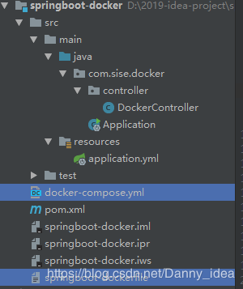
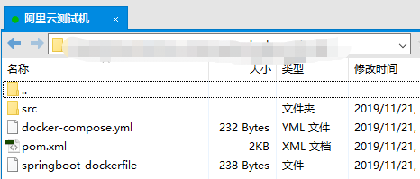
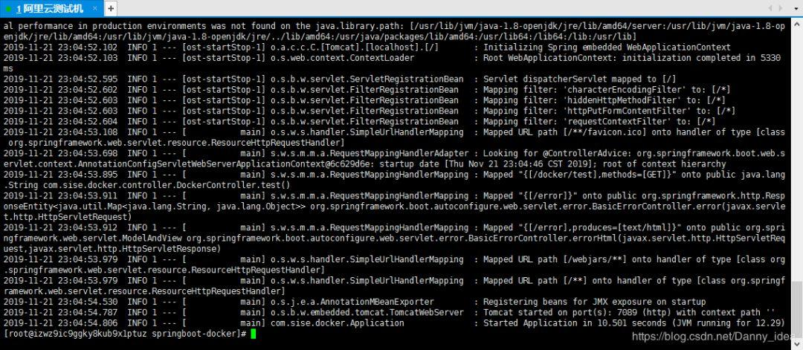
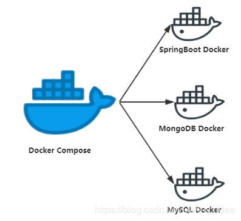
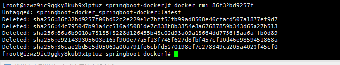
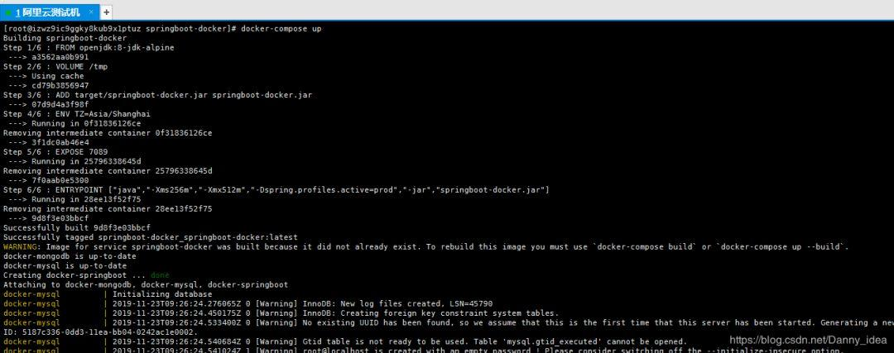
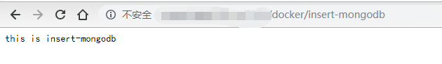
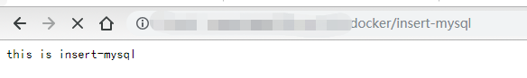
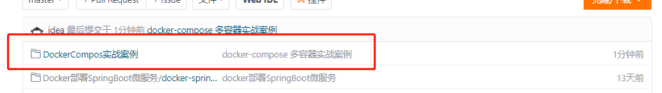

原文连接:https://www.cnblogs.com/javazhiyin/p/11926193.html
前边的两篇文章里面，我们讲解了基于docker来部署基础的SpringBoot容器，如果阅读本文之前没有相关基础的话，可以回看之前的教程。
Docker从入门到掉坑(二)：基于Docker构建SpringBoot微服务
不知道大家在初次使用docker的时候是否有遇到这种场景，每次部署微服务都是需要执行docker run xxx,docker kill xxx 等命令来操作容器。假设说一个系统中依赖了多个docker容器，那么对于每个docker容器的部署岂不是都需要手动编写命令来启动和关闭，这样做就会增加运维人员的开发工作量，同时也容易出错。
Docker Compose 编排技术
在前边的文章中，我们讲解了Docker容器化技术的发展，但是随着我们的Docker越来越多的时候，对于容器的管理也是特别麻烦，因此Docker Compose技术也就诞生了。
Docker Compose技术是通过一份文件来定义和运行一系列复杂应用的Docker工具，通过Docker-compose文件来启动多个容器，网上有很多关于Docker-compose的实战案例，但是都会有些细节地方有所遗漏，所以下边我将通过一个简单的案例一步步地带各位从浅入深地对Docker-compose进行学习。
基于Docker Compose来进行对SpringBoot微服务应用的打包集成
我们还是按照老样子来构建一套基础的SpringBoot微服务项目，首先我们来看看基础版本的项目结构：

首先是我们pom文件的配置内容：
<?xml version="1.0" encoding="UTF-8"?>
<project xmlns="http://maven.apache.org/POM/4.0.0"
xmlns:xsi="http://www.w3.org/2001/XMLSchema-instance"
xsi:schemaLocation="http://maven.apache.org/POM/4.0.0 http://maven.apache.org/xsd/maven-4.0.0.xsd">
<modelVersion>4.0.0</modelVersion>
<groupId>com.sise.idea</groupId>
<artifactId>springboot-docker</artifactId>
<version>1.0-SNAPSHOT</version>
<packaging>jar</packaging>
<name>spring-boot-docker</name>
<url>http://maven.apache.org</url>
<parent>
<groupId>org.springframework.boot</groupId>
<artifactId>spring-boot-starter-parent</artifactId>
<version>2.0.3.RELEASE</version>
</parent>
<properties>
<project.build.sourceEncoding>UTF-8</project.build.sourceEncoding>
</properties>
<dependencies>
<dependency>
<groupId>org.springframework.boot</groupId>
<artifactId>spring-boot-starter-web</artifactId>
</dependency>
<dependency>
<groupId>org.projectlombok</groupId>
<artifactId>lombok</artifactId>
<version>1.16.18</version>
</dependency>
</dependencies>
<build>
<finalName>springboot-docker</finalName>
<plugins>
<plugin>
<groupId>org.springframework.boot</groupId>
<artifactId>spring-boot-maven-plugin</artifactId>
</plugin>
<plugin>
<groupId>org.apache.maven.plugins</groupId>
<artifactId>maven-compiler-plugin</artifactId>
<configuration>
<source>1.8</source>
<target>1.8</target>
</configuration>
</plugin>
</plugins>
</build>
</project>
然后是java程序的内容代码，这里面有常规的controller，application类，代码如下所示：
启动类Application
package com.sise.docker;
import org.springframework.boot.SpringApplication;
import org.springframework.boot.autoconfigure.SpringBootApplication;
/**
* @author idea
* @data 2019/11/20
*/
@SpringBootApplication
public class Application {
public static void main(String[] args) {
SpringApplication.run(Application.class);
}
}
控制器 DockerController
package com.sise.docker.controller;
import org.springframework.web.bind.annotation.GetMapping;
import org.springframework.web.bind.annotation.RequestMapping;
import org.springframework.web.bind.annotation.RestController;
/**
* @author idea
* @data 2019/11/20
*/
@RestController
@RequestMapping(value = "/docker")
public class DockerController {
@GetMapping(value = "/test")
public String test(){
System.out.println("=========docker test=========");
return "this is docker test";
}
}
yml配置文件：
server:
port: 7089
接下来便是docker-compose打包时候要用到的配置文件了。这里采用的方式通常都是针对必要的docker容器编写一份dockerfile，然后统一由Docker Compose进行打包管理，假设我们的微服务中需要引用到了MySQL,MongoDB等应用，那么整体架构如下图所示：
：容器太多，操作好麻烦1.png "Docker从入门到掉坑(三)：容器太多，操作好麻烦")
那么我们先从简单的单个容器入手，看看该如何对SpringBoot做Docker Compose的管理，下边是一份打包SpringBoot进入Docker容器的Dockerfile文件：
#需要依赖的其他镜像
FROM openjdk:8-jdk-alpine
# Spring Boot应用程序为Tomcat创建的默认工作目录。作用是在你的主机”/var/lib/docker”目录下创建一个临时的文件，并且链接到容器中#的”/tmp”目录。
VOLUME /tmp
#是指将原先的src文件 添加到我们需要打包的镜像里面
ADD target/springboot-docker.jar app.jar
#设置镜像的时区,避免出现8小时的误差
ENV TZ=Asia/Shanghai
#容器暴露的端口号 和SpringBoot的yml文件暴露的端口号要一致
EXPOSE 7089
#输入的启动参数内容 下边这段内容相当于运行了java -Xms256m -Xmx512m -jar app.jar
ENTRYPOINT ["java","-Xms256m","-Xmx512m","-jar","app.jar"]
接着便是加入docker-compose.yml文件的环节了,下边是脚本的内容：
#docker引擎对应所支持的docker-compose文本格式
version: '3'
services:
#服务的名称
springboot-docker:
build:
context: .
# 构建这个容器时所需要使用的dockerfile文件
dockerfile: springboot-dockerfile
ports:
# docker容器和宿主机之间的端口映射
- "7089:7089"
docker-compose.ym配置文件有着特殊的规则，通常我们都是先定义version版本号，然后便是列举一系列与容器相关的services内容。
接下来将这份docker服务进行打包，部署到相关的linux服务器上边，这里我采用的是一台阿里云上边购买的服务器来演示。

目前该文件还没有进行打包处理，所以没有target目录，因此dockerfile文件构建的时候是不会成功的，因此需要先进行mvn的打包：
mvn package
接着便是进行Docker-Compose命令的输入了：
[root@izwz9ic9ggky8kub9x1ptuz springboot-docker]# docker-compose up -d
Starting springboot-docker_springboot-docker_1 ... done
[root@izwz9ic9ggky8kub9x1ptuz springboot-docker]#
你会发现这次输入的命令和之前教程中提及的docker指令有些出入，变成了docker-compose 指令，这条指令是专门针对Docker compose文件所设计的，加入了一个-d的参数用于表示后台运行该容器。由于我们的docker-compose文件中知识编写了对于SpringBoot容器的打包，因此启动的时候只会显示一个docker容器。
为了验证docker-compose指令是否生效，我们可以通过docker--compose ps命令来进行验证。
这里边我们使用 docker logs [容器id] 指令可以进入容器查看日志的打印情况：
docker logs ad83c82b014d

最后我们通过请求之前写好的接口便会看到相关的响应：
：容器太多，操作好麻烦4.png "Docker从入门到掉坑(三)：容器太多，操作好麻烦")
基础版本的SpringBoot+Docker compose案例已经搭建好了，还记得我在开头画的那张图片吗：

通常在实际开发中，我们所面对的docker容器并不是那么的简单，还有可能会依赖到多个容器，那么这个时候该如何来编写docker compose文件呢？
下边我们对原先的SpringBoot项目增加对于MySQL和MongoDB的依赖,为了方便下边的场景模拟，这里我们增加两个实体类：
用户类
package com.sise.docker.domain;
import lombok.AllArgsConstructor;
import lombok.Data;
import lombok.NoArgsConstructor;
/**
* @author idea
* @data 2019/11/23
*/
@AllArgsConstructor
@NoArgsConstructor
@Data
public class User {
private Integer id;
private String username;
}
汽车类：
package com.sise.docker.domain;
import lombok.AllArgsConstructor;
import lombok.Data;
import lombok.NoArgsConstructor;
import org.springframework.data.annotation.Id;
/**
* @author idea
* @data 2019/11/23
*/
@Data
@AllArgsConstructor
@NoArgsConstructor
public class Car {
@Id
private Integer id;
private String number;
}
增加对于mongodb，mysql的pom依赖内容
<dependency>
<groupId>org.springframework.boot</groupId>
<artifactId>spring-boot-starter-data-mongodb</artifactId>
</dependency>
<dependency>
<groupId>org.springframework.boot</groupId>
<artifactId>spring-boot-starter-jdbc</artifactId>
</dependency>
<dependency>
<groupId>mysql</groupId>
<artifactId>mysql-connector-java</artifactId>
<version>5.1.21</version>
</dependency>
编写相关的dao层：
package com.sise.docker.dao;
import com.sise.docker.domain.Car;
import org.springframework.data.mongodb.repository.MongoRepository;
import org.springframework.stereotype.Repository;
/**
* @author idea
* @data 2019/11/23
*/
@Repository
public interface CarDao extends MongoRepository<Car, Integer> {
}
package com.sise.docker.dao;
import com.sise.docker.domain.User;
import org.springframework.beans.factory.annotation.Autowired;
import org.springframework.jdbc.core.JdbcTemplate;
import org.springframework.jdbc.core.RowMapper;
import org.springframework.stereotype.Repository;
import java.sql.ResultSet;
import java.sql.SQLException;
/**
* @author idea
* @data 2019/11/23
*/
@Repository
public class UserDao {
@Autowired
private JdbcTemplate jdbcTemplate;
public void insert() {
String time = String.valueOf(System.currentTimeMillis());
String sql = "insert into t_user (username) values ('idea-" + time + "')";
jdbcTemplate.update(sql);
System.out.println("==========执行插入语句==========");
}
class UserMapper implements RowMapper<User> {
@Override
public User mapRow(ResultSet resultSet, int i) throws SQLException {
User unitPO = new User();
unitPO.setId(resultSet.getInt("id"));
unitPO.setUsername(resultSet.getString("username"));
return unitPO;
}
}
}
在控制器中添加相关的函数入口：
package com.sise.docker.controller;
import com.sise.docker.dao.CarDao;
import com.sise.docker.dao.UserDao;
import com.sise.docker.domain.Car;
import org.springframework.beans.factory.annotation.Autowired;
import org.springframework.web.bind.annotation.GetMapping;
import org.springframework.web.bind.annotation.RequestMapping;
import org.springframework.web.bind.annotation.RestController;
import java.util.Random;
/**
* @author idea
* @data 2019/11/20
*/
@RestController
@RequestMapping(value = "/docker")
public class DockerController {
@Autowired
private UserDao userDao;
@Autowired
private CarDao carDao;
@GetMapping(value = "/insert-mongodb")
public String insertMongoDB() {
Car car = new Car();
car.setId(new Random().nextInt(15000000));
String number = String.valueOf(System.currentTimeMillis());
car.setNumber(number);
carDao.save(car);
return "this is insert-mongodb";
}
@GetMapping(value = "/insert-mysql")
public String insertMySQL() {
userDao.insert();
return "this is insert-mysql";
}
@GetMapping(value = "/test2")
public String test() {
System.out.println("=========docker test222=========");
return "this is docker test";
}
}
对原先的docker-compose.yml文件添加相应的内容，主要是增加对于mongodb和mysql的依赖模块，
#docker引擎对应所支持的docker-compose文本格式
version: '3'
services:
#服务的名称
springboot-docker:
container_name: docker-springboot
build:
context: .
dockerfile: springboot-dockerfile
ports:
- "7089:7089"
depends_on:
- mongodb
mongodb:
#容器的名称
container_name: docker-mongodb
image: daocloud.io/library/mongo:latest
ports:
- "27017:27017"
mysql:
#镜像的版本
image: mysql:5.7
container_name: docker-mysql
ports:
- 3309:3306
environment:
MYSQL_DATABASE: test
MYSQL_ROOT_PASSWORD: root
MYSQL_ROOT_USER: root
MYSQL_ROOT_HOST: '%'
这里头我尝试将application.yml文件通过不同的profile来进行区分：
：容器太多，操作好麻烦6.png "Docker从入门到掉坑(三)：容器太多，操作好麻烦")
应上篇文章中有读者问到，不同环境不同配置的指定问题，这里有一种思路，springboot依旧保持原有的按照profile来识别不同环境的配置，具体打包之后读取的配置，可以通过springboot-dockerfile这份文件的ENTRYPOINT 参数来指定，例如下边这种格式：
FROM openjdk:8-jdk-alpine
VOLUME /tmp
ADD target/springboot-docker.jar springboot-docker.jar
#设置镜像的时区,避免出现8小时的误差
ENV TZ=Asia/Shanghai
EXPOSE 7089
#这里可以通过-D参数在对jar打包运行的时候指定需要读取的配置问题
ENTRYPOINT ["java","-Xms256m","-Xmx512m","-Dspring.profiles.active=prod","-jar","springboot-docker.jar"]
最后便是我们的yml配置文件内容，由于配置类docker容器的依赖，所以这里面对于yml的写法不再是通过ip来访问相应的数据库了，而是需要通过service-name的映射来达成目标。
application-prod.yml
server:
port: 7089
spring:
data:
mongodb:
uri: mongodb://mongodb:27017
database: test
datasource:
driver-class-name: com.mysql.jdbc.Driver
url: jdbc:mysql://mysql:3306/test?useUnicode=true&characterEncoding=UTF-8
username: root
password: root
当相关的代码和文件都整理好了之后，将这份代码发送到服务器上进行打包。
mvn package
接着我们便可以进行docker-compose的启动了。
这里有个小坑需要注意一下，由于之前我们已经对单独的springboot容器进行过打包了，所以在执行docker-compose up指令的时候会优先使用已有的容器，而不是重新创建容器。
这个时候需要先将原先的image镜像进行手动删除，再打包操作：
[root@izwz9ic9ggky8kub9x1ptuz springboot-docker]# docker images
REPOSITORY TAG IMAGE ID CREATED SIZE
springboot-docker latest 86f32bd9257f 4 hours ago 128MB
<none> <none> 411616c3d7f7 2 days ago 679MB
<none> <none> 77044e3ad9c2 2 days ago 679MB
<none> <none> 5d9328dd1aca 2 days ago 679MB
springbootmongodocker_springappserver latest 36237acf08e1 3 days ago 695MB
删除镜像的命令：
docker rmi 【镜像id】

此时再重新进行docker-compose指令的打包操作即可：
docker-compose up

启动之后，可以通过docker-compose自带的一些指令来进行操作，常用的一些指令我都归纳在了下边：
docker-compose [Command]
Commands:
build 构建或重建服务
bundle 从compose配置文件中产生一个docker绑定
config 验证并查看compose配置文件
create 创建服务
down 停止并移除容器、网络、镜像和数据卷
events 从容器中接收实时的事件
exec 在一个运行中的容器上执行一个命令
help 获取命令的帮助信息
images 列出所有镜像
kill 通过发送SIGKILL信号来停止指定服务的容器
logs 从容器中查看服务日志输出
pause 暂停服务
port 打印绑定的公共端口
ps 列出所有运行中的容器
pull 拉取并下载指定服务镜像
push Push service images
restart 重启YAML文件中定义的服务
rm 删除指定已经停止服务的容器
run 在一个服务上执行一条命令
scale 设置指定服务运行容器的个数
start 在容器中启动指定服务
stop 停止已运行的服务
top 显示各个服务容器内运行的进程
unpause 恢复容器服务
up 创建并启动容器
version 显示Docker-Compose版本信息
最后对相应的接口做检测：


相关的完整代码我已经上传到了gitee地址，如果有需要的朋友可以前往进行下载。
代码地址：https://gitee.com/IdeaHome_admin/wfw

实践完毕之后，你可能会觉得有了docker-compose之后，对于多个docker容器来进行管理显得就特别轻松了。
但是往往现实中并没有这么简单，docker-compose存在着一个弊端，那就是不能做跨机器之间的docker容器进行管理。
因此随者技术的发展，后边也慢慢出现了一种叫做Kubernetes的技术。Kubernetes（俗称k8s）是一个开源的，用于管理云平台中多个主机上的容器化的应用，Kubernetes的目标是让部署容器化的应用简单并且高效（powerful）,Kubernetes提供了应用部署，规划，更新，维护的一种机制。
Kubernetes这类技术对于小白来说入门的难度较高，后边可能会抽空专门来写一篇适合小白阅读的k8s入门文章。